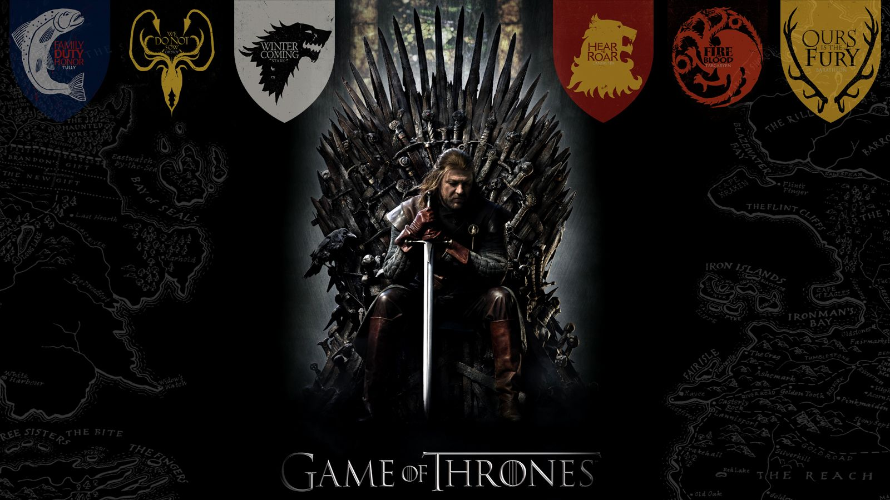
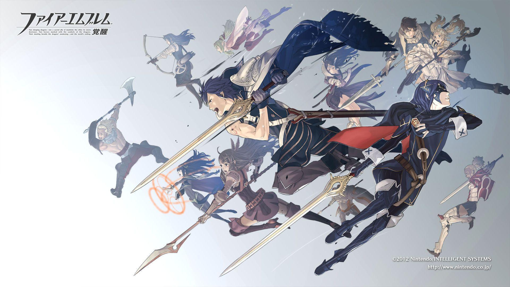
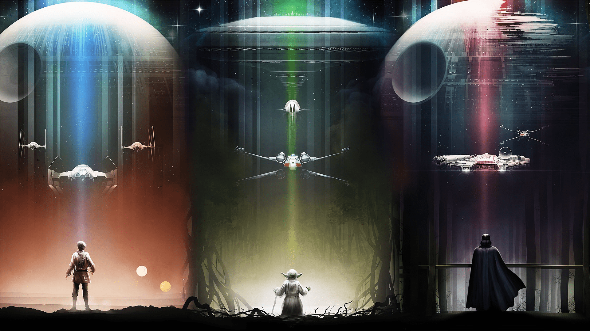

Hola Mundo
Hola mundo Mi nombre es Jose David Martinez Salandia,tengo 19 años naci el 27 de abril del año 2003 y estoy aprediendo HTML en la clase de introducion a sistemas
mi historial academico es: estudie en el quinder en la ecuela brigadas de amor cristiano ,en escuela estuve en la escuela juan calvino y en el colegio estuve en el colegio la esperanza en el cual me gradue el año 2020 en el año de la pandemia y actualmento estoy estudiando la carrera de ingenieria en sistemas en la Universidad Autonoma de Honduras en el CURLP en choluteca que estoy desde el año 2021 hasta ahora este es mi tercer año desde que estoy en la universidad
En mi primer periodo de universidad lleve la clases de:
Historia de Honduras HH101
sociologia SC101
filosofia FF101
Matematica I MM110
Geometria y trigonometria MM111
En mi segundo periodo de universidad lleve la clases de:
apreciacion musical y analisis RR158
Español general EG011
Ingles I IN101
Juegos organizados RR192
Estudios de la mujer SC099
Introduccion a la computacion MM116
En mi Tercer periodo de universidad lleve la clases de:
Ingles II IN102
Calculo I MM201
Ingles I IN101
En mi Cuarto periodo de universidad lleve la clases de:
Vectores y Matrices MM202
Calculo II MM202
Dibujo I DQ101
ingles III IN103
En mi Quinto periodo de universidad lleve la clases de:
Fisica general I FS100
Estadistica I
En mi Sexto periodo de universidad lleve la clases de:
Fisica General II FS200
Ecuaciones Diferenciales MM411
Dibujo II DQ102
En mi septimo periodo de universidad el actual llevo la clases de:
Educacion Ambiental BI130
Introducion a la ingenieria en sistemas IS110
Mis pasatiempo son :tocar guitarra,
usar la computadora ,jugar videojuegos y jugar voleyball
Mi serie favorita es Juego de Tronos

mi sagas de videjuego favorito es the legend of zelda y fire emblem
.png)

mi sagas de pelicula favorita es : STAR WARS
